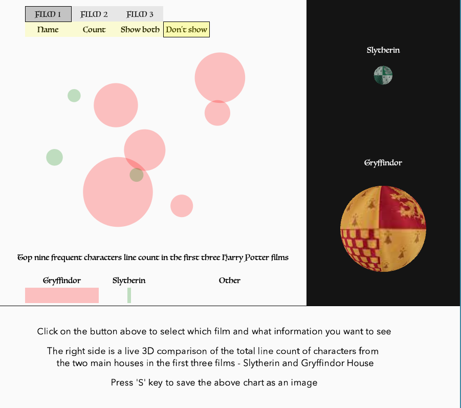
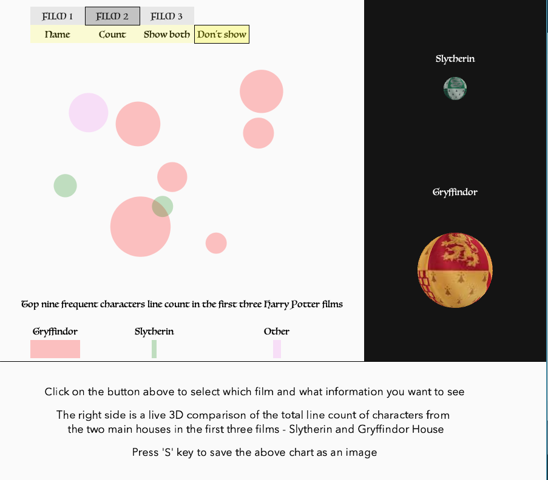
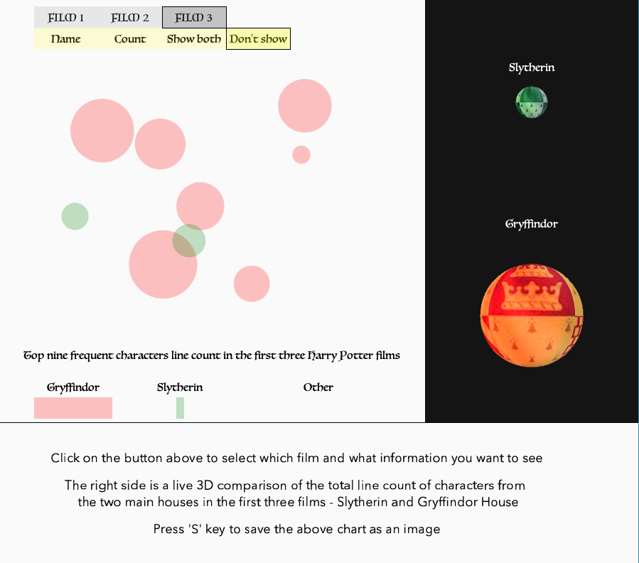
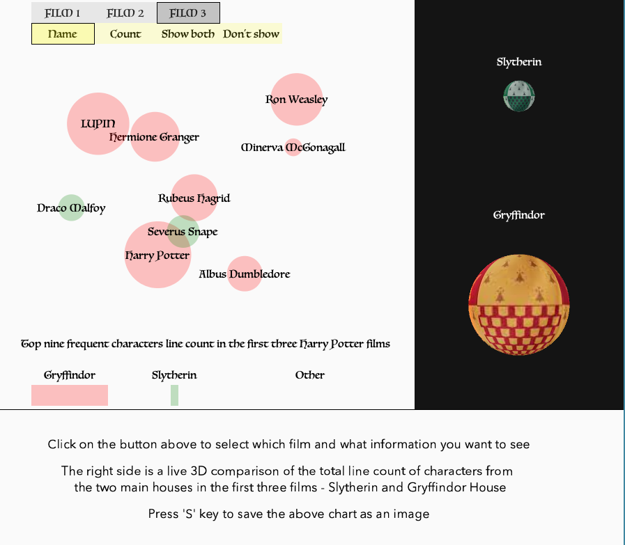
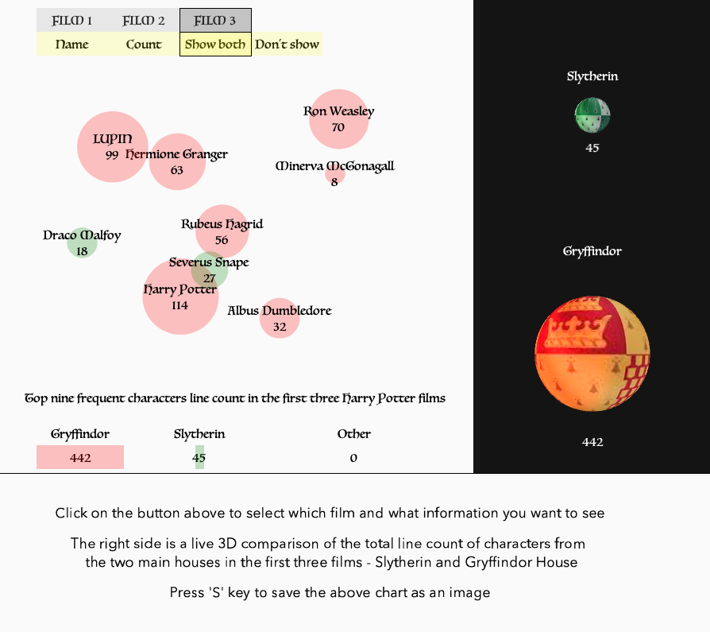
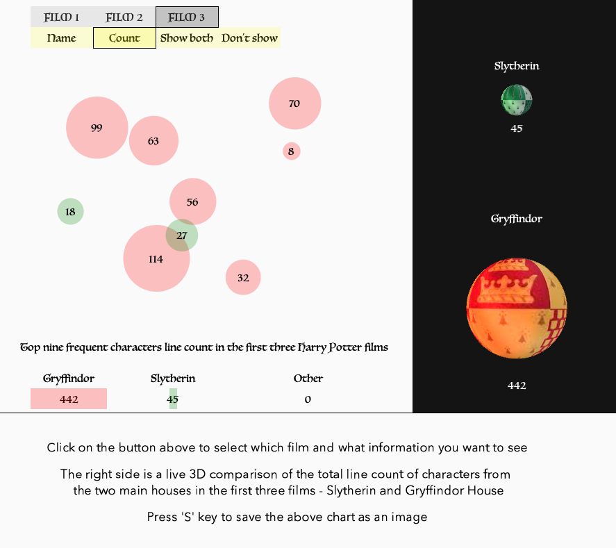

Harry Potter Line Count
An interactive data visualisation of top nine character line count in the first three Harry Potter films.
I am in full charge of the whole design and development process
What the user sees
The main section is a data chart for the line count, visualised by circles of three colours (red for
Gryffindor, green for Slytherin, and pink for other),
in which the size of the circle is
proportional to the line count of each character. Below the circles are three bars which shows the
total line count
from the house of Gryffindor, Slytherin and other houses/schools.
The right side is a live 3D representation of the Gryffindor ball and Slytherin Ball, whose sizes
are based on the line count from each house as well.
The balls rotate around the y axis.
The bottom section contains simple instructions to view and save the data as images.
Interactivtiy
Users toggle the buttons of the first row to choose the data of which film is show in the chart. By default, the film 1 is selected.
They toggle the buttons of the second row to choose to view certain textual information (the
character names, the number of line count, or both).
By default, ‘don’t show info’ is selected.
The button that has been pressed is highlighted to let the user know which film and which info
section is shown.
Users can press ’s’ key on keyboard to save the frame above as an image.
Created with Processing 3
Also in Web Projects

Hugh Lane Gallery Website Dev

PASA - photo-sharing web app